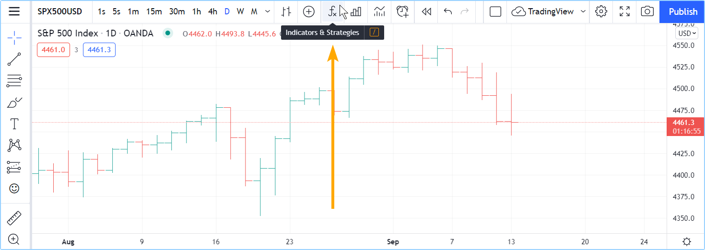
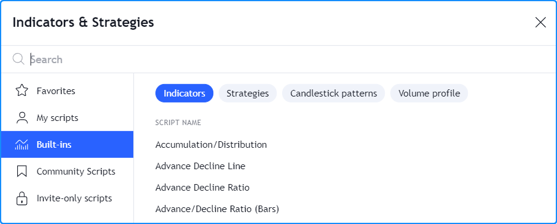
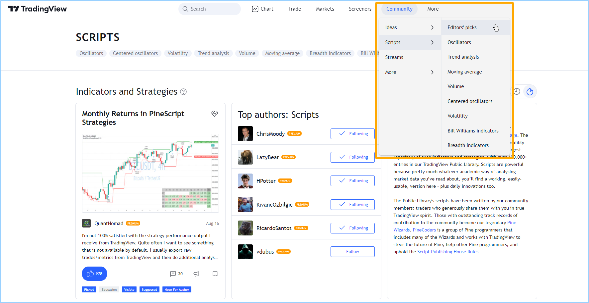
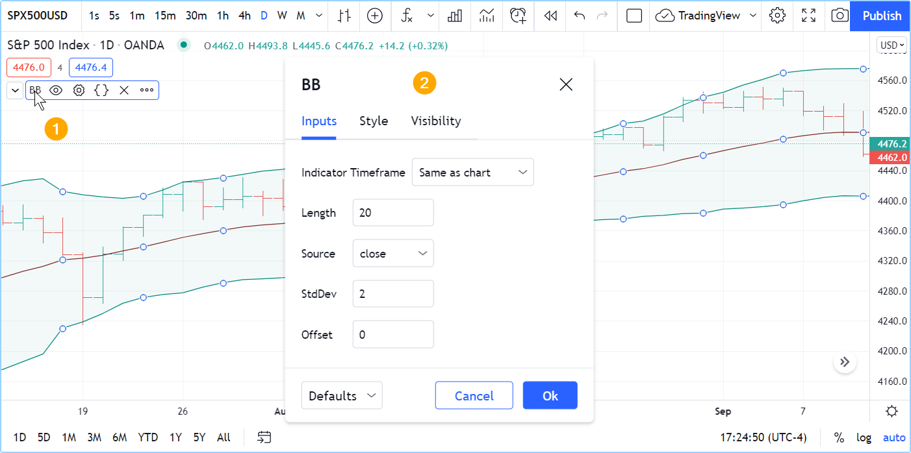
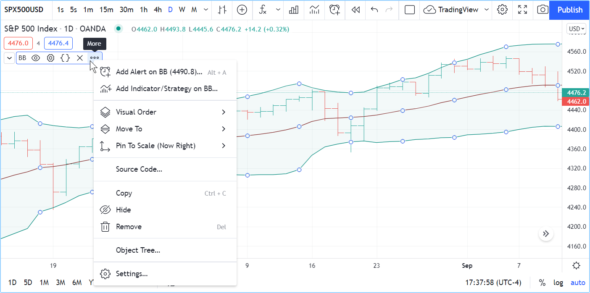

First steps¶
Introduction¶
Welcome to the Pine Script® v5 User Manual, which will accompany you in your journey to learn to program your own trading tools in Pine Script®. Welcome also to the very active community of Pine Script® programmers on TradingView.
In this page, we present a step-by-step approach that you can follow to gradually become more familiar with indicators and strategies (also called scripts) written in the Pine Script® programming language on TradingView. We will get you started on your journey to:
- Use some of the tens of thousands of existing scripts on the platform.
- Read the Pine Script® code of existing scripts.
- Write Pine Script® scripts.
If you are already familiar with the use of Pine scripts on TradingView and are now ready to learn how to write your own, then jump to the Writing scripts section of this page.
If you are new to our platform, then please read on!
Using scripts¶
If you are interested in using technical indicators or strategies on TradingView, you can first start exploring the thousands of indicators already available on our platform. You can access existing indicators on the platform in two different ways:
- By using the chart’s “Indicators & Strategies” button, or
- By browsing TradingView’s Community Scripts, the largest repository of trading scripts in the world, with more than 100,000 scripts, most of which are free and open-source, which means you can see their Pine Script® code.
If you can find the tools you need already written for you, it can be a good way to get started and gradually become proficient as a script user, until you are ready to start your programming journey in Pine Script®.
Loading scripts from the chart¶
To explore and load scripts from you chart, use the “Indicators & Strategies” button:
The dialog box presents different categories of scripts in its left pane:
- Favorites lists the scripts you have “favorited” by clicking on the star that appears to the left of its name when you mouse over it.
- My scripts displays the scipts you have written and saved in the Pine Script® Editor. They are saved in TradingView’s cloud.
- Built-ins groups all TradingVIew built-ins organized in four categories: indicators, strategies, candlestick patterns and volume profiles. Most are written in Pine Script® and available for free.
- Community Scripts is where you can search from the 100,000+ published scripts written by TradingView users.
- Invite-only scripts contains the list of the invite-only scripts you have been granted access to by their authors.
Here, the section containing the TradingView built-ins is selected:
When you click on one of the indicators or strategies (the ones with the green and red arrows following their name), it loads on your chart.
Browsing Community Scripts¶
From TradingView’s homepage, you can bring up the Community Scripts stream from the “Community” menu. Here, we are pointing to the “Editors’ Picks” section, but there are many other categories you can choose from:
You can also search for scripts using the homepage’s “Search” field, and filter scripts using different criteria. The Help Center has a page explaining the different types of scripts that are available.
The scripts stream shows script widgets, i.e., placeholders showing a miniature view of each publication’s chart and description, and its author. By clicking on it you will open the script’s page, where you can see the script on a chart, read the author’s description, like the script, leave comments or read the script’s source code if it was published open-source.
Once you find an interesting script in the Community Scripts, follow the instructions in the Help Center to load it on your chart.
Changing script settings¶
Once a script is loaded on the chart, you can double-click on its name (#1) to bring up its “Settings/Inputs” tab (#2):
The “Inputs” tab allows you to change the settings which the script’s author has decided to make editable. You can configure some of the script’s visuals using the “Style” tab of the same dialog box, and which timeframes the script should appear on using the “Visibility” tab.
Other settings are available to all scripts from the buttons that appear to the right of its name when you mouse over it, and from the “More” menu (the three dots):
Reading scripts¶
Reading code written by good programmers is the best way to develop your understanding of the language. This is as true for Pine Script® as it is for all other programming languages. Finding good open-source Pine Script® code is relatively easy. These are reliable sources of code written by good programmers on TradingView:
- The TradingView built-in indicators
- Scripts selected as Editors’ Picks
- Scripts by the authors the PineCoders account follows
- Many scripts by authors with high reputation and open-source publications.
Reading code from Community Scripts is easy; if you don’t see a grey or red “lock” icon in the upper-right corner of the script’s widget, this indicates the script is open-source. By opening its script page, you will be able to see its source.
To see the code of TradingView built-ins, load the indicator on your chart, then hover over its name and select the “Source code” curly braces icon (if you don’t see it, it’s because the indicator’s source is unavailable). When you click on the icon, the Pine Script® Editor will open and from there, you can see the script’s code. If you want to play with it, you will need to use the Editor’s “More” menu button at the top-right of the Editor’s pane, and select “Make a copy…”. You will then be able to modify and save the code. Because you will have created a different version of the script, you will need to use the Editor’s “Add to Chart” button to add that new copy to the chart.
This shows the Pine Script® Editor having just opened after we selected the “View source” button from the indicator on our chart. We are about to make a copy of its source because it is read-only for now (indicated by the “lock” icon near its filename in the Editor):

You can also open TradingView built-in indicators from the Pine Script® Editor (accessible from the “Pine Script® Editor” tab at the bottom of the chart) by using the “Open/New default built-in script…” menu selection.
Writing scripts¶
We have built Pine Script® to empower both budding and seasoned traders to create their own trading tools. We have designed it so it is relatively easy to learn for first-time programmers — although learning a first programming language, like trading, is rarely very easy for anyone — yet powerful enough for knowledgeable programmers to build tools of moderate complexity.
Pine Script® allows you to write three types of scripts:
- Indicators like RSI, MACD, etc.
- Strategies which include logic to issue trading orders and can be backtested and forward-tested.
- Libraries which are used by more advanced programmers to package oft-used functions that can be reused by other scripts.
The next step we recommend is to write your first indicator.